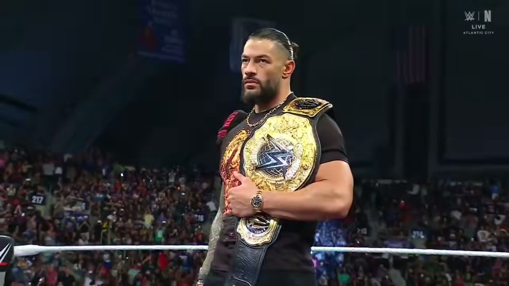

Chi può battere Roman Reigns? La risposta è Oba Femi
Reigns ha battuto Seth Rollins a SummerSlam e sembra imbattibile. Sembra. C'è un solo uomo che può detronizzarlo, e la WWE lo sta costruendo con calma.
C'è un solo uomo in WWE che può battere Roman Reigns. E non è chi pensi.
Il campione, oggi
Reigns ha battuto Seth Rollins a SummerSlam e si è tenuto il titolo dei pesi massimi. In questo momento sembra imbattibile. Sembra.

Penta ci sta provando, e lo rispettiamo. Ma la risposta vera è un'altra.
Oba Femi
Oba Femi ha vinto il King of the Ring. Con quella vittoria poteva scegliere di sfidare il campione a SummerSlam.
E invece ha scelto Brock Lesnar, dentro Hell in a Cell.
Una follia? No. Una strategia.
Perché non ha sfidato subito Reigns
Pensateci un attimo. Se Oba Femi avesse sfidato Reigns subito, il rischio era bruciarlo: un nome in ascesa che va contro il Tribal Chief troppo presto e ne esce ridimensionato.
Secondo Dave Meltzer, la WWE non ha fretta: vuole costruire Oba Femi fino a WrestleMania 43, per il momento della sua incoronazione.
Non si corre verso la cima. Ci si arriva quando la cima ti sta aspettando.
Chi c'è ad aspettarlo
E chi c'è in cima, ad aspettarlo? Roman Reigns.
Il Tribal Chief contro il Ruler. Il vecchio re contro quello nuovo. È il tipo di storia che si scrive da sola: uno che ha dominato per anni, e uno che è stato costruito apposta per prenderne il posto.
Io lo voglio vedere a WrestleMania. Non adesso, non in fretta: alla fine del percorso, quando ogni passo avrà avuto un senso.
E nel frattempo?
Nel frattempo Reigns ha altro a cui pensare, a partire dalla gabbia di Survivor Series. Se vi siete persi il mio pronostico, lo trovate qui: WarGames, Bloodline contro 946.
E tu?
Chi può battere Roman Reigns? Scrivilo nei commenti su YouTube o sui miei social.
Io sono Tony Wrestling. Ci vediamo alla prossima.
Domande frequenti
Chi può battere Roman Reigns?
Secondo me Oba Femi. Ha vinto il King of the Ring e la WWE lo sta costruendo con calma per il momento giusto.
Perché Oba Femi non ha sfidato Roman Reigns a SummerSlam?
Ha scelto Brock Lesnar dentro Hell in a Cell. Sfidare subito Reigns rischiava di bruciarlo; secondo Dave Meltzer la WWE vuole costruirlo fino a WrestleMania 43.